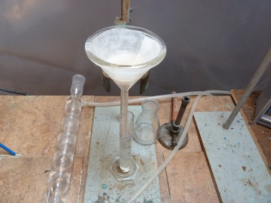
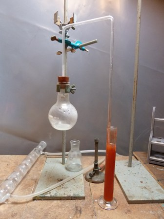
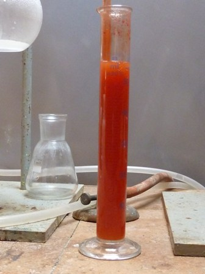
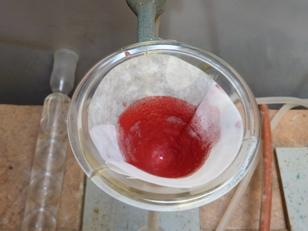
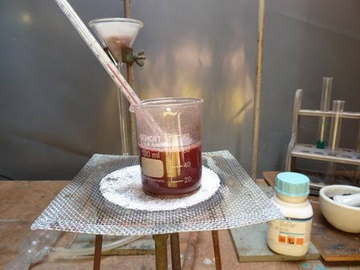
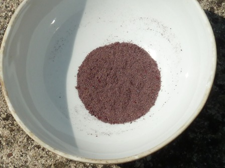
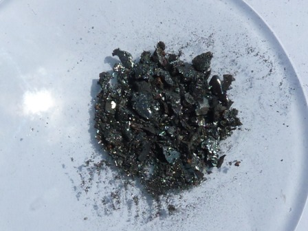

Stavolta solo chimica applicata, poche parole di contorno e tante di procedura.
Allora, eravamo rimasti a:
-pesare 10 g di rosso di cadmio, metterli in una beuta da 150 ml su agitatore magnetico e aggiungere lentamente una miscela di 25 ml di HNO3 e 5 ml di HCl concentrati.
Ad ogni aggiunta si ha riscaldamento e vigoroso sviluppo di ossidi d'azoto, pertanto l'aggiunta va fatta tassativamente sotto cappa o in un luogo adeguato.
Dato l'ambiente fortemente ossidante non si ha sviluppo nè di H2S nè di H2Se, ma zolfo e selenio vengono ossidati in un primo momento ad elementi e poi ad acido rispettivamente solforico e selenioso.

Il pigmento rosso si trasforma alla fine dell'aggiunta in un bruttissimo grumo gommoso, apparentemente del tutto insolubile (ad un sommario test dovrebbe trattarsi di una mix di zolfo, selenio e pigmento non reagito); lasciar digerire nell'acido per un di giorno.
Per completare l'ossidazione montare un refigerante a ricadere e far bollire a piccola fiamma la miscela fino alla cessazione di sviluppo di ipoazotide.
Il grumo molto lentamente si disgrega e si scioglie, lasciando alla fine solo un liquido biancastro, che va filtrato; un po' di selenio si perde anche in questa fase, ma è sempre meglio portarsi dietro meno porcherie possibili.
Il filtrato è perfettamente incoloro (sali di cadmio, solfati, cloruri, seleniti).

Diluire il filtrato con altrettanta acqua e poi aggiungere lentamente ammoniaca, sempre mescolando energicamente; ad ogni aggiunta precipita l'idrossido di cadmio bianco, che mescolando si ridiscioglie finchè l'ambiente è sufficientemente acido; quando non si sciolie più, tornare leggermente indietro con qualche goccia di HCl, fino a riottenere una soluzione limpida e e senza più HNO3 libero.
Ora i sali, oltre che di cadmio, sono di ammonio.
La riduzione dello ione selenito a selenio elemento a questo punto può essere effettuata in due modi: con anidride solforosa e con idrazina; li ho provati entrambi.

Porre la soluzione in un recipiente alto e sottile (un cilindro graduato) per favorire il massimo contatto con il gas e far gorgogliare una sufficiente quantità di SO2, facendola sviluppare in un pallone dalla reazione tra metabisolfito K2S2O5 e HCl; scaldando leggermente il pallone di reazione si ottiene una buona corrente di anidride solforosa, portata al fondo del cilindro da un tubo di vetro.
Dopo un po' si nota prima ingiallimento della soluzione e poi forte intorbidamento per la formazione dello stato allotropico rosso del selenio, sotto forma di un bel precipitato finissimo rosso intenso.

Continuare con la SO2 se si vuole ridurre con questo metodo, oppure interrompere e provare con la procedura all'idrazina, molto più comoda perchè avviene in fase omogenea.
Ho quindi lasciato sedimentare un po' di precipitato, giusto per filtrare e fotografare: ecco finalmente il selenio rosso!.

Alla soluzione residua aggiungere mescolando 4 g di idrazina solfato e scaldare appena appena se si vuole ottenere prevalentemente selenio rosso, lasciando in riposo una giornata.

Per ebollizione l'allotropo rosso si trasforma e si aggrega nella forma grigia, molto più facilmente separabile. In ogni caso filtrare, lavare accuratamente e lasciar asciugare.

Per fusione in capsula di porcellana si ottiene il selenio nero;

per raffreddamento molto lento il selenio si trasforma nell'ulteriore allotropo metallico (selenio grigio, non fatto).
Questo elemento impartisce alla fiamma un deciso colore azzurrino, svolgendo fumi di biossido (anidride seleniosa) SeO2.
Ricordo che il selenio, tutti i suoi composti e altri reagenti di questa esperienza sono molto tossici; in caso di tentativo di replica di quanto descritto, agire quindi solo se si è consapevoli di quello che si fa in ogni passaggio.
Per concludere, le reazioni sono complessivamente (semplificando) le seguenti (non faccio comparire l'HCl e nemmeno lo ione ammonio della neutralizzazione, che non sono significativi):
3 CdS + 8 HNO3 --> 3 Cd(NO3)2 + 3 S + 4 H2O
3 CdSe + 8 HNO3 --> 3 Cd(NO3)2 + 3 Se + 4 H2O
HNO3 + S --> H2SO4 + NO
4 HNO3 + Se + H2O --> H2SeO3 + 4 NO
K2S2O5 + 2 HCl --> 2 KCl + 2 SO2 + H2O
2 SO2 + H2SeO3 + H2O --> 2 H2SO4 + Se
H2SeO3 + N2H4 --> Se + N2 + 3 H2O
La resa globale in selenio non è entusiasmante (non mi aspettavo che lo fosse!) ed è stata di soli 1,8 g , sufficienti tuttavia a confermare la presenza di questo elemento nel rosso di cadmio e nel contempo fornire l'occasione per una interessante esperienza di pura chimica sperimentale.
Finalmente desidero ringraziare, e lo faccio con molto piacere e stima, il sig. Arturo (lo chiamerò così), che mi ha fornito utilissime idee in merito a quanto sopra, e senza i cui preziosi consigli probabilmente non avrei iniziato il lavoro.